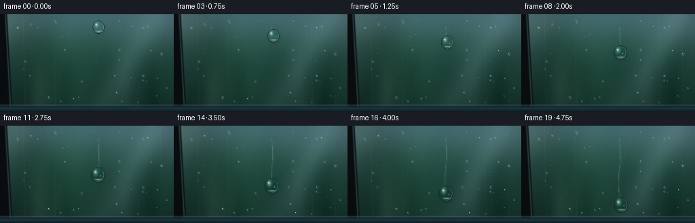
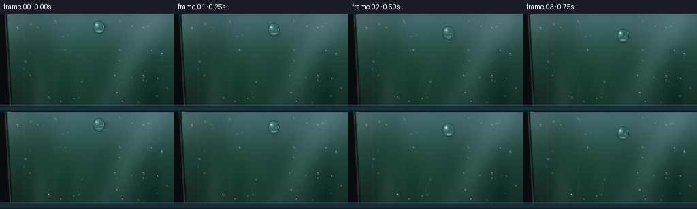

CODING AGENTS AS PIXEL WORLD MODELS
traex/GPT-5.6-Sol · mechanics_0050
点击播放 · 原生 RGB 像素
逐轮保存的候选
回放视频、检查图与代码变化。
每份候选均可单独播放。实际图片检查记录在下方工具轨迹中。
候选 01播放与检查图
点击播放 · 原生 RGB 像素


展开代码变化
--- 上一保存版本 +++ 本次保存版本 @@ -0,0 +1,195 @@ +from pathlib import Path +import numpy as np +import cv2 +from PIL import Image +import artifact_io + +# Procedural macro shot of a freshly washed car side-window. +# Everything is rendered at 3x and downsampled for smooth, photographic edges. +W, H, N = 256, 144, 20 +S = 3 +w, h = W*S, H*S +rng = np.random.default_rng(7319) + +def smoothstep(a, b, x): + t = np.clip((x-a)/(b-a), 0.0, 1.0) + return t*t*(3-2*t) + +def make_background(): + yy, xx = np.mgrid[0:h, 0:w].astype(np.float32) + X, Y = xx/S, yy/S + # Cool reflected sky at top, leafy reflected garden below. + top = np.array([91, 132, 146], np.float32) + mid = np.array([48, 88, 82], np.float32) + low = np.array([24, 49, 43], np.float32) + t = smoothstep(7, 105, Y)[...,None] + arr = top*(1-t) + mid*t + t2 = smoothstep(82, 144, Y)[...,None] + arr = arr*(1-t2) + low*t2 + # Large defocused foliage and patches of sky, reflected in the glass. + blobs = [ + (31, 46, 38, (30,67,57), .78), (74, 73, 33, (22,66,48), .72), + (113, 46, 27, (93,133,119), .34), (151, 67, 43, (22,69,54), .68), + (207, 38, 38, (123,156,157), .34), (238, 88, 45, (29,72,58), .78), + (40, 117, 40, (17,43,36), .72), (112, 127, 43, (34,73,58), .65), + (189, 125, 54, (18,48,42), .65), (9, 7, 29, (155,183,184), .30), + ] + for cx,cy,rad,col,alpha in blobs: + d2=(X-cx)**2+(Y-cy)**2 + a=np.exp(-d2/(2*rad*rad))[...,None]*alpha + arr=arr*(1-a)+np.array(col,np.float32)*a + # Soft vertical reflected tree trunks. + for cx, wid, val in [(57,8,19),(97,5,-12),(184,10,16),(224,7,-14)]: + band=np.exp(-((X-cx)/wid)**2)[...,None] + arr += band*val*smoothstep(28,130,Y)[...,None] + # Broad pale diagonal reflection makes the window plane legible. + diagonal = np.exp(-((X - (232 - .58*Y))/19)**2)[...,None] + arr += diagonal*np.array([16,19,20],np.float32) + arr = cv2.GaussianBlur(arr, (0,0), 7*S) + # Gentle glass tint and vignette. + vign = 1 - .20*np.clip(((X-128)/160)**2 + ((Y-72)/110)**2, 0, 1) + arr *= vign[...,None] + # very fine sensor-like texture, fixed across frames + noise = rng.normal(0, 0.9, (h,w,1)).astype(np.float32) + arr += noise + return np.clip(arr,0,255).astype(np.uint8) + +base = make_background() +yy, xx = np.mgrid[0:h,0:w].astype(np.float32) +X,Y = xx/S, yy/S + +# Stationary wash beads: positions deliberately avoid the main trajectory. +beads=[] +for i in range(31): + while True: + bx=float(rng.uniform(18,249)); by=float(rng.uniform(8,131)) + if abs(bx-145)>23 or by<11: break + br=float(rng.uniform(.65,2.05)) + beads.append((bx,by,br,float(rng.uniform(0,6.28)))) +# Hand-placed beads improve natural distribution. +beads += [(26,20,2.4,.2),(218,18,1.8,2.1),(93,33,1.15,1.0),(238,59,2.5,4.2), + (44,91,1.45,5.1),(193,94,1.1,.7),(72,123,2.2,3.0),(231,121,1.25,1.2)] + +def alpha_blend(img, color, a): + return img.astype(np.float32)*(1-a[...,None]) + np.asarray(color,np.float32)*a[...,None] + +def draw_small_bead(img,bx,by,br,phase): + # high-resolution analytic bead with dark lower rim and pin-point sky reflection + d=np.sqrt(((X-bx)/(br*1.02))**2+((Y-by)/(br*.98))**2) + body=np.clip((1.12-d)/.23,0,1)*.19 + out=alpha_blend(img,(103,139,142),body) + rim=np.exp(-((d-.91)/.11)**2)*.25 + shade=np.clip((Y-by)/(br+1e-3),-.8,.8) + out += rim[...,None]*(np.array([12,19,18])[None,None,:] + shade[...,None]*18) + hi=np.exp(-(((X-(bx-.28*br))/(.18*br+.13))**2+((Y-(by-.33*br))/(.16*br+.13))**2))*0.72 + out=alpha_blend(out,(232,244,242),hi) + ca=np.exp(-(((X-(bx+.16*br))/(.42*br+.15))**2+((Y-(by+.52*br))/(.16*br+.12))**2))*.28 + out=alpha_blend(out,(182,214,204),ca) + return np.clip(out,0,255) + +def render_main_drop(img,cx,cy,r,frame): + out=img.astype(np.float32) + # Fast sliding bead is still nearly round, with a subtly tapered crown. + rx=r*.96; ry=r*1.07 + nx=(X-cx)/rx; ny=(Y-cy)/ry + rho=np.sqrt(nx*nx+ny*ny) + inside=rho<1.0 + # Refract/magnify the reflected scene inside the spherical lens. + # Sampling toward the opposite side gives the characteristic curved/inverted reflection. + sx=(cx - (X-cx)*.56)*S + sy=(cy - (Y-cy)*.46)*S + mapx=np.clip(sx,0,w-1).astype(np.float32) + mapy=np.clip(sy,0,h-1).astype(np.float32) + refr=cv2.remap(img,mapx,mapy,cv2.INTER_CUBIC,borderMode=cv2.BORDER_REFLECT).astype(np.float32) + # Lens contrast and a sky-bright upper half. + refr=(refr-98)*1.23+101 + refr += (-ny[...,None])*np.array([6,9,10],np.float32) + edge_alpha=smoothstep(1.03,.89,rho)*.91 + out=out*(1-edge_alpha[...,None])+refr*edge_alpha[...,None] + # Outer dark meniscus, inner silver rim. + outer=np.exp(-((rho-1.015)/.050)**2)*.68 + out=out*(1-outer[...,None])+np.array([15,31,33],np.float32)*outer[...,None] + inner=np.exp(-((rho-.91)/.055)**2) + # lighting stronger on right/bottom arc + arc=np.clip(.20 + .48*nx + .25*ny,0,1)*inner*.58 + out=out*(1-arc[...,None])+np.array([177,207,202],np.float32)*arc[...,None] + # Soft cast shadow just below/right where the bead meets glass. + sh=np.exp(-(((X-(cx+1.7))/(r*.76))**2+((Y-(cy+2.2))/(r*.87))**2))*smoothstep(.7,1.03,rho)*.23 + out *= (1-sh[...,None]) + # Broad glossy upper-left reflection and sharp specular catchlight. + gl=np.exp(-(((X-(cx-r*.32))/(r*.30))**2+((Y-(cy-r*.38))/(r*.42))**2))*0.54 + out=out*(1-gl[...,None])+np.array([196,224,223],np.float32)*gl[...,None] + hi=np.exp(-(((X-(cx-r*.40))/(r*.115))**2+((Y-(cy-r*.43))/(r*.10))**2))*.96 + out=out*(1-hi[...,None])+np.array([248,252,246],np.float32)*hi[...,None] + # Bright lower caustic crescent. + ca=np.exp(-(((X-(cx+r*.05))/(r*.42))**2+((Y-(cy+r*.69))/(r*.12))**2))*.72 + ca*=smoothstep(.3,.85,rho) + out=out*(1-ca[...,None])+np.array([208,235,224],np.float32)*ca[...,None] + # tiny secondary glint helps spherical reading + hi2=np.exp(-(((X-(cx+r*.42))/(r*.07))**2+((Y-(cy+r*.16))/(r*.09))**2))*.56 + out=out*(1-hi2[...,None])+np.array([220,239,233],np.float32)*hi2[...,None] + return np.clip(out,0,255) + +def add_car_frame(img): + out=img.astype(np.float32) + # Left rubber window seal, angled slightly with perspective. + edge=10.0 + .055*Y + mask=smoothstep(edge+1.6,edge-1.0,X) + rubber=np.zeros_like(out) + rubber[:]=[9,13,15] + # restrained reflected highlight on black trim + rubber += np.exp(-((X-(edge-2.2))/1.15)**2)[...,None]*np.array([33,42,44]) + out=out*(1-mask[...,None])+rubber*mask[...,None] + # Bottom glossy blue-grey painted door/window frame. + bmask=smoothstep(131.5,138.5,Y) + paint=np.zeros_like(out); paint[:]=[13,28,34] + paint += np.exp(-((Y-134.0)/1.25)**2)[...,None]*np.array([72,91,93]) + paint += np.exp(-((Y-139.2)/3.0)**2)[...,None]*np.array([12,23,27]) + out=out*(1-bmask[...,None])+paint*bmask[...,None] + return np.clip(out,0,255) + +frames=[] +for k in range(N): + p=k/(N-1) + # Gravity: slight acceleration, then near-terminal sliding speed. + motion=.10*p + .90*(p**1.12) + cy=19.0 + 98.0*motion + cx=145.0 + 1.7*np.sin(p*2.25*np.pi) + .6*p + r=8.6 + 1.65*smoothstep(.08,.82,p) + .20*np.sin(p*np.pi) + img=base.astype(np.float32).copy() + # Faint sheet streaks from washing on the glass. + for sx,op in [(34,.050),(79,.035),(202,.032),(236,.026)]: + line=np.exp(-((X-(sx+.018*Y))/0.52)**2)*op + img=alpha_blend(img,(172,196,192),line) + # Wet path already traversed by the drop; length grows as it descends. + # A subdued darker center and hairline highlights make it read as wet glass. + wavex=145.0 + 1.25*np.sin(np.clip((Y-19)/98,0,1)*2.25*np.pi) + active=smoothstep(15,23,Y)*smoothstep(cy-r*.62,cy-r*1.15,Y) + trail=np.exp(-((X-wavex)/1.22)**2)*active*.12 + img=alpha_blend(img,(111,145,142),trail) + left=np.exp(-((X-(wavex-.78))/.25)**2)*active*.19 + img=alpha_blend(img,(195,215,209),left) + # A few tiny beads are absorbed as the main droplet reaches them. + for bx,by,br,ph in beads: + if (by < cy-r*.85 and abs(bx-cx)<r*.75 and by>17): + continue + img=draw_small_bead(img,bx,by,br,ph) + # residual pin-beads along the main wet wake + wake_positions=[(144.0,30,.72),(146.0,46,.55),(143.8,67,.66),(145.8,85,.48)] + for bx,by,br in wake_positions: + if by < cy-r-2: + img=draw_small_bead(img,bx,by,br,0) + img=render_main_drop(img,cx,cy,r,k) + img=add_car_frame(img) + # Small moving shimmer in reflected glass, not camera motion. + shimmer=np.sin((X*.13+Y*.047+k*.32))*0.32 + img += shimmer[...,None] + lo=np.clip(img,0,255).astype(np.uint8) + lo=cv2.resize(lo,(W,H),interpolation=cv2.INTER_LANCZOS4) + # modest photographic finishing + blur=cv2.GaussianBlur(lo,(0,0),.35) + lo=cv2.addWeighted(lo,1.12,blur,-.12,0) + frames.append(lo) + +frames=np.stack(frames).astype(np.uint8) +artifact_io.save(frames, Path(__file__).resolve().parent)
可观测工具轨迹
实际执行的命令与返回图片。
命令 1exit 0
/bin/bash -lc "cat prompt.txt && printf '\\n---RULES---\\n' && cat GENERATION_RULES.md && printf '\\n---SPEC---\\n' && cat task_spec.json"
命令 2exit 0
/bin/bash -lc "find . -maxdepth 2 -type f -printf '%p\\n' | sort && printf '\\nTOOLS\\n' && command -v ffmpeg || true && command -v blender || true && command -v convert || true && python3 - <<'PY' for m in ['cv2','numpy','PIL','imageio','moviepy']: try: x=__import__(m); print(m,'OK') except Exception as e: print(m,'NO',e) PY"
命令 3exit 0
/bin/bash -lc 'cat artifact_io.py'
命令 4exit 0
/bin/bash -lc "cat > generate.py <<'PY'
from pathlib import Path
import numpy as np
import cv2
from PIL import Image
import artifact_io
# Procedural macro shot of a freshly washed car side-window.
# Everything is rendered at 3x and downsampled for smooth, photographic edges.
W, H, N = 256, 144, 20
S = 3
w, h = W*S, H*S
rng = np.random.default_rng(7319)
def smoothstep(a, b, x):
t = np.clip((x-a)/(b-a), 0.0, 1.0)
return t*t*(3-2*t)
def make_background():
yy, xx = np.mgrid[0:h, 0:w].astype(np.float32)
X, Y = xx/S, yy/S
# Cool reflected sky at top, leafy reflected garden below.
top = np.array([91, 132, 146], np.float32)
mid = np.array([48, 88, 82], np.float32)
low = np.array([24, 49, 43], np.float32)
t = smoothstep(7, 105, Y)[...,None]
arr = top*(1-t) + mid*t
t2 = smoothstep(82, 144, Y)[...,None]
arr = arr*(1-t2) + low*t2
# Large defocused foliage and patches of sky, reflected in the glass.
blobs = [
(31, 46, 38, (30,67,57), .78), (74, 73, 33, (22,66,48), .72),
(113, 46, 27, (93,133,119), .34), (151, 67, 43, (22,69,54), .68),
(207, 38, 38, (123,156,157), .34), (238, 88, 45, (29,72,58), .78),
(40, 117, 40, (17,43,36), .72), (112, 127, 43, (34,73,58), .65),
(189, 125, 54, (18,48,42), .65), (9, 7, 29, (155,183,184), .30),
]
for cx,cy,rad,col,alpha in blobs:
d2=(X-cx)**2+(Y-cy)**2
a=np.exp(-d2/(2*rad*rad))[...,None]*alpha
arr=arr*(1-a)+np.array(col,np.float32)*a
# Soft vertical reflected tree trunks.
for cx, wid, val in [(57,8,19),(97,5,-12),(184,10,16),(224,7,-14)]:
band=np.exp(-((X-cx)/wid)**2)[...,None]
arr += band*val*smoothstep(28,130,Y)[...,None]
# Broad pale diagonal reflection makes the window plane legible.
diagonal = np.exp(-((X - (232 - .58*Y))/19)**2)[...,None]
arr += diagonal*np.array([16,19,20],np.float32)
arr = cv2.GaussianBlur(arr, (0,0), 7*S)
# Gentle glass tint and vignette.
vign = 1 - .20*np.clip(((X-128)/160)**2 + ((Y-72)/110)**2, 0, 1)
arr *= vign[...,None]
# very fine sensor-like texture, fixed across frames
noise = rng.normal(0, 0.9, (h,w,1)).astype(np.float32)
arr += noise
return np.clip(arr,0,255).astype(np.uint8)
base = make_background()
yy, xx = np.mgrid[0:h,0:w].astype(np.float32)
X,Y = xx/S, yy/S
# Stationary wash beads: positions deliberately avoid the main trajectory.
beads=[]
for i in range(31):
while True:
bx=float(rng.uniform(18,249)); by=float(rng.uniform(8,131))
if abs(bx-145)>23 or by<11: break
br=float(rng.uniform(.65,2.05))
beads.append((bx,by,br,float(rng.uniform(0,6.28))))
# Hand-placed beads improve natural distribution.
beads += [(26,20,2.4,.2),(218,18,1.8,2.1),(93,33,1.15,1.0),(238,59,2.5,4.2),
(44,91,1.45,5.1),(193,94,1.1,.7),(72,123,2.2,3.0),(231,121,1.25,1.2)]
def alpha_blend(img, color, a):
return img.astype(np.float32)*(1-a[...,None]) + np.asarray(color,np.float32)*a[...,None]
def draw_small_bead(img,bx,by,br,phase):
# high-resolution analytic bead with dark lower rim and pin-point sky reflection
d=np.sqrt(((X-bx)/(br*1.02))**2+((Y-by)/(br*.98))**2)
body=np.clip((1.12-d)/.23,0,1)*.19
out=alpha_blend(img,(103,139,142),body)
rim=np.exp(-((d-.91)/.11)**2)*.25
shade=np.clip((Y-by)/(br+1e-3),-.8,.8)
out += rim[...,None]*(np.array([12,19,18])[None,None,:] + shade[...,None]*18)
hi=np.exp(-(((X-(bx-.28*br))/(.18*br+.13))**2+((Y-(by-.33*br))/(.16*br+.13))**2))*0.72
out=alpha_blend(out,(232,244,242),hi)
ca=np.exp(-(((X-(bx+.16*br))/(.42*br+.15))**2+((Y-(by+.52*br))/(.16*br+.12))**2))*.28
out=alpha_blend(out,(182,214,204),ca)
return np.clip(out,0,255)
def render_main_drop(img,cx,cy,r,frame):
out=img.astype(np.float32)
# Fast sliding bead is still nearly round, with a subtly tapered crown.
rx=r*.96; ry=r*1.07
nx=(X-cx)/rx; ny=(Y-cy)/ry
rho=np.sqrt(nx*nx+ny*ny)
inside=rho<1.0
# Refract/magnify the reflected scene inside the spherical lens.
# Sampling toward the opposite side gives the characteristic curved/inverted reflection.
sx=(cx - (X-cx)*.56)*S
sy=(cy - (Y-cy)*.46)*S
mapx=np.clip(sx,0,w-1).astype(np.float32)
mapy=np.clip(sy,0,h-1).astype(np.float32)
refr=cv2.remap(img,mapx,mapy,cv2.INTER_CUBIC,borderMode=cv2.BORDER_REFLECT).astype(np.float32)
# Lens contrast and a sky-bright upper half.
refr=(refr-98)*1.23+101
refr += (-ny[...,None])*np.array([6,9,10],np.float32)
edge_alpha=smoothstep(1.03,.89,rho)*.91
out=out*(1-edge_alpha[...,None])+refr*edge_alpha[...,None]
# Outer dark meniscus, inner silver rim.
outer=np.exp(-((rho-1.015)/.050)**2)*.68
out=out*(1-outer[...,None])+np.array([15,31,33],np.float32)*outer[...,None]
inner=np.exp(-((rho-.91)/.055)**2)
# lighting stronger on right/bottom arc
arc=np.clip(.20 + .48*nx + .25*ny,0,1)*inner*.58
out=out*(1-arc[...,None])+np.array([177,207,202],np.float32)*arc[...,None]
# Soft cast shadow just below/right where the bead meets glass.
sh=np.exp(-(((X-(cx+1.7))/(r*.76))**2+((Y-(cy+2.2))/(r*.87))**2))*smoothstep(.7,1.03,rho)*.23
out *= (1-sh[...,None])
# Broad glossy upper-left reflection and sharp specular catchlight.
gl=np.exp(-(((X-(cx-r*.32))/(r*.30))**2+((Y-(cy-r*.38))/(r*.42))**2))*0.54
out=out*(1-gl[...,None])+np.array([196,224,223],np.float32)*gl[...,None]
hi=np.exp(-(((X-(cx-r*.40))/(r*.115))**2+((Y-(cy-r*.43))/(r*.10))**2))*.96
out=out*(1-hi[...,None])+np.array([248,252,246],np.float32)*hi[...,None]
# Bright lower caustic crescent.
ca=np.exp(-(((X-(cx+r*.05))/(r*.42))**2+((Y-(cy+r*.69))/(r*.12))**2))*.72
ca*=smoothstep(.3,.85,rho)
out=out*(1-ca[...,None])+np.array([208,235,224],np.float32)*ca[...,None]
# tiny secondary glint helps spherical reading
hi2=np.exp(-(((X-(cx+r*.42))/(r*.07))**2+((Y-(cy+r*.16))/(r*.09))**2))*.56
out=out*(1-hi2[...,None])+np.array([220,239,233],np.float32)*hi2[...,None]
return np.clip(out,0,255)
def add_car_frame(img):
out=img.astype(np.float32)
# Left rubber window seal, angled slightly with perspective.
edge=10.0 + .055*Y
mask=smoothstep(edge+1.6,edge-1.0,X)
rubber=np.zeros_like(out)
rubber[:]=[9,13,15]
# restrained reflected highlight on black trim
rubber += np.exp(-((X-(edge-2.2))/1.15)**2)[...,None]*np.array([33,42,44])
out=out*(1-mask[...,None])+rubber*mask[...,None]
# Bottom glossy blue-grey painted door/window frame.
bmask=smoothstep(131.5,138.5,Y)
paint=np.zeros_like(out); paint[:]=[13,28,34]
paint += np.exp(-((Y-134.0)/1.25)**2)[...,None]*np.array([72,91,93])
paint += np.exp(-((Y-139.2)/3.0)**2)[...,None]*np.array([12,23,27])
out=out*(1-bmask[...,None])+paint*bmask[...,None]
return np.clip(out,0,255)
frames=[]
for k in range(N):
p=k/(N-1)
# Gravity: slight acceleration, then near-terminal sliding speed.
motion=.10*p + .90*(p**1.12)
cy=19.0 + 98.0*motion
cx=145.0 + 1.7*np.sin(p*2.25*np.pi) + .6*p
r=8.6 + 1.65*smoothstep(.08,.82,p) + .20*np.sin(p*np.pi)
img=base.astype(np.float32).copy()
# Faint sheet streaks from washing on the glass.
for sx,op in [(34,.050),(79,.035),(202,.032),(236,.026)]:
line=np.exp(-((X-(sx+.018*Y))/0.52)**2)*op
img=alpha_blend(img,(172,196,192),line)
# Wet path already traversed by the drop; length grows as it descends.
# A subdued darker center and hairline highlights make it read as wet glass.
wavex=145.0 + 1.25*np.sin(np.clip((Y-19)/98,0,1)*2.25*np.pi)
active=smoothstep(15,23,Y)*smoothstep(cy-r*.62,cy-r*1.15,Y)
trail=np.exp(-((X-wavex)/1.22)**2)*active*.12
img=alpha_blend(img,(111,145,142),trail)
left=np.exp(-((X-(wavex-.78))/.25)**2)*active*.19
img=alpha_blend(img,(195,215,209),left)
# A few tiny beads are absorbed as the main droplet reaches them.
for bx,by,br,ph in beads:
if (by < cy-r*.85 and abs(bx-cx)<r*.75 and by>17):
continue
img=draw_small_bead(img,bx,by,br,ph)
# residual pin-beads along the main wet wake
wake_positions=[(144.0,30,.72),(146.0,46,.55),(143.8,67,.66),(145.8,85,.48)]
for bx,by,br in wake_positions:
if by < cy-r-2:
img=draw_small_bead(img,bx,by,br,0)
img=render_main_drop(img,cx,cy,r,k)
img=add_car_frame(img)
# Small moving shimmer in reflected glass, not camera motion.
shimmer=np.sin((X*.13+Y*.047+k*.32))*0.32
img += shimmer[...,None]
lo=np.clip(img,0,255).astype(np.uint8)
lo=cv2.resize(lo,(W,H),interpolation=cv2.INTER_LANCZOS4)
# modest photographic finishing
blur=cv2.GaussianBlur(lo,(0,0),.35)
lo=cv2.addWeighted(lo,1.12,blur,-.12,0)
frames.append(lo)
frames=np.stack(frames).astype(np.uint8)
artifact_io.save(frames, Path(__file__).resolve().parent)
PY
python3 generate.py
ls -lh pixels.npz inspection.png index.html frames/00.png frames/19.png"命令 5exit 0
/bin/bash -lc "python3 - <<'PY'
import numpy as np
from PIL import Image
from pathlib import Path
fs=[np.array(Image.open(f'frames/{i:02d}.png')) for i in range(20)]
a=np.stack(fs)
print(a.shape,a.dtype,a.min(),a.max())
print('MAD consecutive', [round(np.abs(a[i].astype(float)-a[i-1]).mean(),2) for i in range(1,20)])
PY"视觉工具实际返回图片 1

保存候选 1 份；完成命令 5 次；可验证图片返回 1 张。原始 API 响应与完整日志保留在本地。